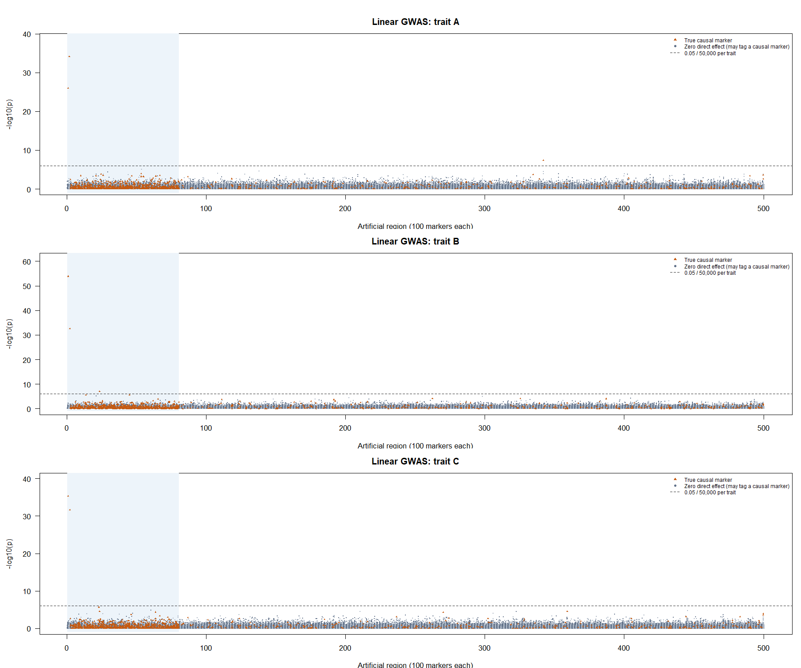
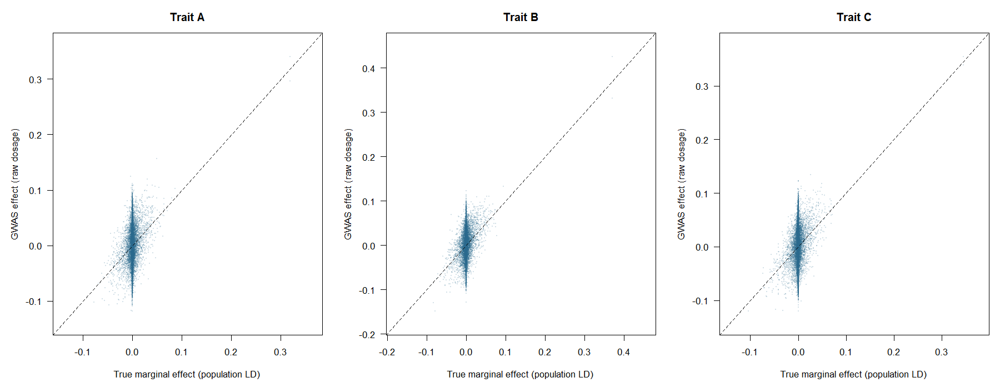
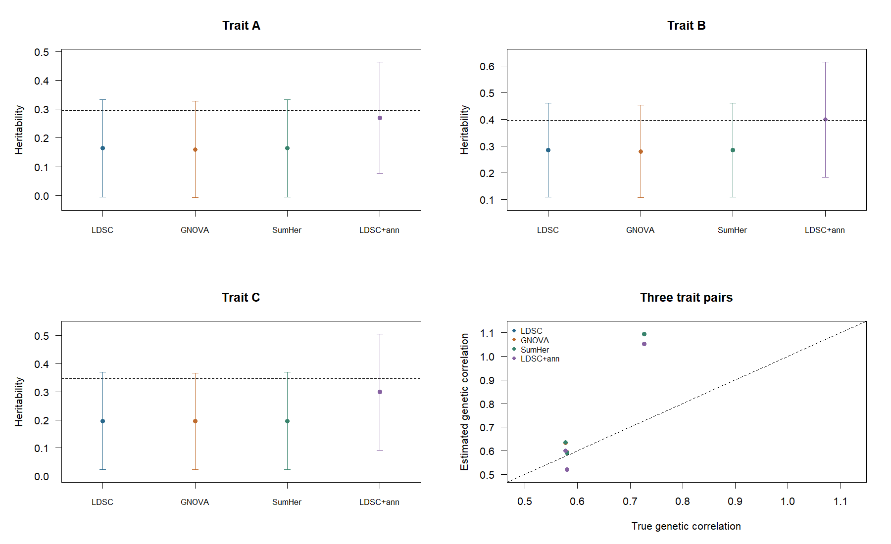
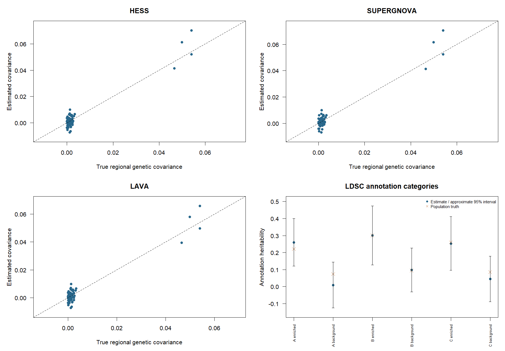
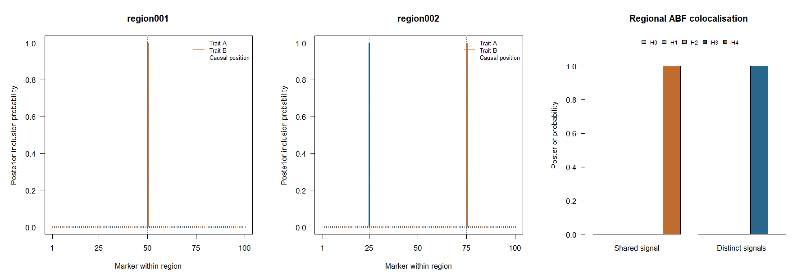
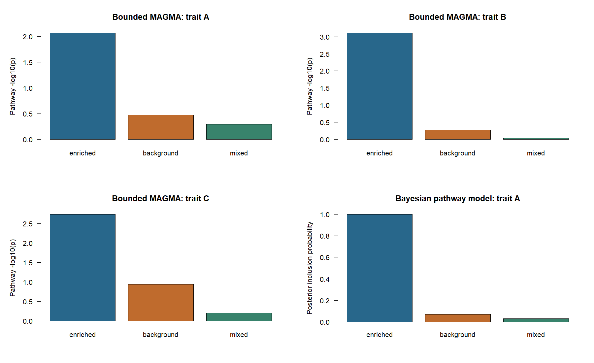
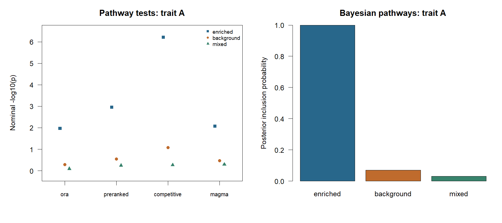
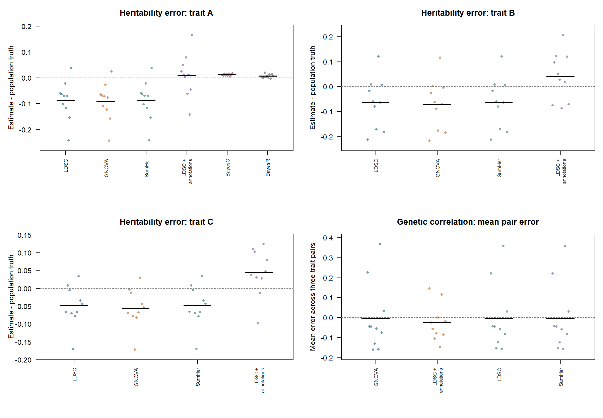

One simulated dataset across six genomic modules
All six modules ran on the same simulated dataset. Pathway analyses use the documented saddlepoint route, which returned all requested gene statistics. The connected 50K-marker BayesC and BayesR fits use declared fixed parameter values. Parameter learning is checked in a separate matched-reference study; see the qualification record for its settings and numerical scope.
What this example demonstrates
Start with a simulated population, run GWAS, then reuse its summary statistics and LD for Bayesian regression, genetic correlation, fine-mapping, scoring and pathway analysis. All model calls use the current gsuite R interfaces.
This connected example covers glma, gbayes, gcorr, gmap, gscore and gsea. It checks selected calculations and demonstrates representative methods at this scale. It does not establish calibration of every supported method or option. The library-specific qualification pages report a separate fixed set of ten simulations using the same design.
One population, explicit sample groups
| Setting | Value |
|---|---|
| Individuals / markers | 10,000 / 50,000 |
| Traits | Three continuous traits: A, B and C |
| Target heritabilities | 0.30, 0.40 and 0.35 |
| Genomic layout | 500 independent artificial regions of 100 markers |
| GWAS samples | Three disjoint groups of 3,000; one per trait |
| Scoring test sample | 1,000 individuals excluded from GWAS and LD preparation |
| LD reference | The pooled 9,000 GWAS individuals |
| Annotation | 1,000 artificial genes; enriched, background and mixed pathway sets |
| Replicates | One detailed example and an earlier set of ten fixed simulations |
The genotype generator has known within-region population LD. It writes one marker at a time to a packed BED file. gsim then generates phenotypes from explicit effects, using bounded reads from the prepared Glist. Neither a full genotype matrix nor a 50,000-by-50,000 LD matrix is created.
The LD reference retains all within-region correlations and treats regions as independent. It shares individuals with the GWAS samples; it is not an independent external panel. Summary-based fits therefore use a pooled-LD approximation to each study’s cross-products. The artificial chromosomes, genes and pathways have no biological interpretation.
The connected workflow
These excerpts show the model calls. Sample selection, truth construction, effect units and complete settings are in the runnable script.
# Association: one selected GWAS group and its phenotype.
association <- glma(y, Glist, method = "linear", threads = 1)
# Prepare aligned summaries separately from fitting.
prepared <- sumstat(stat, LDlist, task = "standardize")$stat
# Genome-wide genetic correlation from three trait tables.
correlation <- gcorr(stat, LDlist, method = "ldsc", task = "rg",
control = list(intercept = "fixed_one",
overlap_intercept = 0))
# Bayesian regression: fixed declared parameters, four posterior chains.
bayesian <- gbayes(prepared$A, LDlist, method = "bayesc",
prior = prior, control = control)
# Regional mapping after explicit OLS sufficient-statistic preparation.
mapping_stat <- gmap_stat(stat, LDlist, phenotype_variance = phenotype_variance)
mapping <- gmap(mapping_stat, LDlist, regions = regions,
method = "multi_effect", prior = prior, control = control)
# Apply allele-labelled weights with explicit coding to held-out individuals.
prediction <- gscore(task = "apply", Glist = test_Glist,
weights = weights, allele_frequencies = frequencies)
# Aggregate marker evidence, then analyse pathways of genes.
evidence <- gstat(stat, LDlist, sets = genes, blocks = blocks,
metadata = metadata,
control = list(independent_blocks = TRUE,
tail_method = "saddlepoint"))
pathways <- gsea(evidence$stat, pathway_sets, method = "competitive",
sampling = evidence$sampling)The prior and control placeholders differ between Bayesian regression and regional mapping. They are explicit in the script. No universal prior scale is assumed across methods.
Results
GWAS: which signals were detected?

Each panel shows all 50,000 markers from glma, with a dashed reference line at \(p=0.05/50{,}000=10^{-6}\) for that trait. Positions follow the 500 artificial regions, not human chromosomes. A causal variant need not reach this threshold: most effects are small and each GWAS uses 3,000 individuals. Conversely, a grey marker can be associated through LD with a causal variant; grey significant points are not automatically false-positive associations.
The association summary reports the numbers of causal markers and threshold crossings separately. Each trait has 984 causal markers; 985 distinct markers affect at least one trait. There are three threshold crossings for A, three for B and two for C; all are directly causal in this draw. The 15 direct comparisons with R ordinary least squares remain the independent numerical check of these scans.

The target here is the marginal effect, \(R_{\mathrm{pop}}B\), which includes LD with other causal variants. The diagonal represents equality. Direct causal effects \(B\) are a different target and are used for the Bayesian comparison below.
Heritability and genetic correlation

| Analysis | h2 A | h2 B | h2 C |
|---|---|---|---|
| Realized population truth | 0.296 | 0.396 | 0.347 |
| Baseline LDSC | 0.164 | 0.285 | 0.197 |
| GNOVA | 0.160 | 0.279 | 0.195 |
| SumHer, one baseline component | 0.164 | 0.285 | 0.197 |
| LDSC with enriched/background annotations | 0.270 | 0.399 | 0.299 |
The baseline fits underestimate heritability in this draw. Effects are concentrated in the first 80 regions, which also occupy the lower-LD end of the generator. The annotation-aware model represents this heterogeneity and gives estimates closer to truth here. This contrast is about model assumptions; it does not rank software implementations or establish bias across repetitions. SumHer uses ordinary LD scores as tagging weights and one baseline architecture component, explaining its near-identical results to baseline LDSC in this setup.
The uncertainty bars show estimate plus/minus 1.96 jackknife standard errors, using the 500 regions as blocks. They are illustrative normal approximations, not an interval-coverage evaluation. Correlations are imprecise with 3,000 individuals per trait: baseline LDSC gives B/C rg = 1.095 (SE 0.331), and annotation-aware LDSC gives 1.052 (SE 0.228), versus truth 0.726. These out-of-range estimates remain visible; they are not clipped to one.
HESS, SUPERGNOVA and LAVA also returned the requested covariances in 20 predetermined regions. HESS standard errors were unavailable for 40 of the 60 trait-pair/region results because its plug-in genetic/residual matrices did not meet the positive-semidefinite requirement. SUPERGNOVA returned all 60 standard errors. The exercised LAVA covariance route does not return standard errors. Finite point estimates do not remove those uncertainty limitations.

Each regional panel contains 20 predetermined regions and three trait pairs. Covariances use phenotype-standardized units. The annotation panel compares the enriched and background contributions to total heritability; the categories are disjoint and exhaustive. Points for regions and traits from the same dataset are dependent. Download the labelled truth comparisons.
Bayesian regression: a supported reference-LD recipe
The scalar BayesC and BayesR workflow was qualified separately across five simulations. Each fit used standardized summary statistics from 3,000 individuals and sparse LD from an independent, matched reference of 9,000 individuals. LD retained a 1,000-marker window with \(r^2=0.001\).
The fit learns residual variance, marker-effect variance and mixture probabilities. The reference-LD residual update is
\[ V_e^{\mathrm{work}}=V_e+0.9V_g, \qquad V_g=b^{\mathsf T}R_{\mathrm{ref}}b. \]
Priors specify an expected nonzero proportion of 0.02. BayesR uses variance multipliers \((0,0.01,0.1,1)\) and active-component proportions \((0.012,0.006,0.002)\). Mixture probabilities use an explicit Dirichlet strength of 5,000. Four chains use 500 burn-in sweeps and retain 700 BayesC or 5,000 BayesR sweeps.
fit <- gbayes(prepared, LDlist, method = "bayesc", trait = "trait",
prior = prior,
control = list(
residual_policy = "reference_ld",
residual_adjustment = 0.9,
estimate_effect_variance = TRUE,
estimate_weights = TRUE,
burnin = 500,
sampling_sweeps = 700,
seeds = c(101, 102, 103, 104),
threads = 4
),
posterior = list(reference = LDlist,
phenotype_variance = c(trait = 1)))| Result across five simulations | BayesC | BayesR |
|---|---|---|
| Mean reference truth | 0.294 | 0.312 |
| Mean posterior heritability | 0.305 | 0.297 |
| Heritability bias | +0.011 | -0.015 |
| Heritability RMSE | 0.023 | 0.021 |
| Conditional intervals containing truth | 5/5 | 5/5 |
| Mean marker-effect correlation with truth | 0.927 | 0.943 |
| Mean genetic-score correlation with truth | 0.941 | 0.951 |
| Maximum R-hat | 1.004 | 1.005 |
| Minimum bulk ESS | 1,240 | 1,182 |
Both methods passed the predefined heritability, effect-recovery, prediction and chain-diagnostic criteria.

The exact settings, acceptance criteria and downloadable results are in the qualification record.
Regional mapping and colocalisation
The two regions were selected before fitting. Region 1 contains a shared causal variant; region 2 contains distinct causal variants for A and B. The fitted multi-effect model uses one component, matching this deliberately simple regional truth. ABF colocalisation uses the same complete regional summaries from disjoint samples and its at-most-one-causal-variant-per-trait assumption.
All four regional fits converged. ABF H4 is effectively one for the shared signal, and H3 is effectively one for the distinct signals in this draw. The credible-set summary records set size, completeness, LD checks and whether the known causal marker is included for each region and trait. All four sets contain one marker, the true causal variant, and pass the recorded LD checks.

Pathways
gstat() aggregates marker evidence into 1,000 artificial genes, retaining within-region gene dependence. The supported workflow uses the saddlepoint tail calculation for all 3,000 gene-by-trait statistics. Every statistic was returned in the detailed example, with no moment-matching fallback.
The completed gsea() calls cover ORA, preranked GSEA, competitive regression, the bounded MAGMA route and a scalar Bayesian pathway model. The enriched pathway covers the simulated enriched regions; the mixed pathway samples genes across the genome, and the background pathway covers regions with lower causal-marker probability. Background does not mean zero genetic effects.

The enriched pathway has nominal bounded-MAGMA p-values of 0.0086, 0.00077 and 0.0018 for A, B and C. Its Bayesian PIP for trait A is 0.9995, compared with 0.0705 for background and 0.0315 for mixed. ORA, preranked GSEA and competitive regression also show the strongest evidence for the enriched set in this draw. Pathway p-values here are unadjusted; the different methods use different null hypotheses, so their magnitudes do not rank method quality.
P-values and posterior inclusion probabilities answer different questions and are shown on separate scales. One simulated dataset cannot establish pathway false-discovery control, credible-set coverage or comparative power.

Earlier connected results across simulations
Ten datasets repeat the same 10,000-individual, 50,000-marker design. Genotypes, marker effects and phenotypes are regenerated each time. The regions, annotations, sample split, priors, chain lengths and working-noise scale are fixed before these runs. The detailed example above is excluded from the aggregate. No seeds are selected or replaced based on their results.
All ten runs completed. Mean population heritability for trait A was 0.300. These repetitions provide the connected checks for correlation, regional mapping and pathway analysis. The separate five-repetition Bayesian qualification above is the maintained evidence for the supported parameter-learning recipe.
Baseline LDSC, GNOVA and SumHer underestimate heritability on average in this nonuniform architecture. Annotation-aware LDSC changes the mean estimates to 0.310, 0.439 and 0.394 for A, B and C, against mean truths of 0.300, 0.398 and 0.349. Accounting for enrichment reduces systematic underestimation here but can overshoot; it does not improve every trait’s RMSE.

Each point represents one simulation; short black lines show means. Zero is the estimation-error target. Genetic-correlation errors are first averaged over the three pairs within a simulation, so the pairs are not presented as independent repetitions. Download accuracy summaries.
All 40 component credible sets contain their simulated causal variant; each set contains one marker. Colocalisation assigns probability effectively one to the appropriate shared- or distinct-causal hypothesis in these easy regions. The mean Bayesian pathway PIP is 0.894 for the enriched set, compared with 0.054 for background and 0.038 for mixed. The downloadable tables retain variation across datasets and the other pathway methods.
Across the ten runs, HESS supplies standard errors for 189 of 600 regional covariances, SUPERGNOVA for 600 of 600, and the exercised LAVA route for none. Six annotation-category correlations are undefined because an estimated component heritability is nonpositive. The supported saddlepoint gene-tail route returns all 30,000 gene/trait p-values; 11 use its recorded moment-matching fallback. These availability and fallback flags remain in the downloadable tables.
With only ten simulations, one outcome changes a proportion by ten percentage points. These results are descriptive checks under one non-null design, not precise calibration, a null false-positive assessment or general method rankings. The run status lists every planned seed and its outcome. The linked aggregate tables retain the labelled truth comparisons and numerical availability used above.
Run and inspect
From the gsuite checkout with its development library prepared:
source("tools/examples/simulated_genomics_workflow.R")Outputs stay in build/examples/simulated-genomics/: nine fixed stage RDS files, the reusable genotype/LD resources, compact tables, fit summaries and figures. Each stage file contains its result, warnings, timing, script hash, R session and installed native versions. Repeat execution replaces these named outputs.
Download the compact result tables: correlation estimates, pathways, numerical availability, gene-tail comparison and stage timings. Additional downloads: GWAS summary, Bayesian qualification summary and Bayesian repetition results.
After an interruption, the same script/design can resume from completed stages:
Rscript --vanilla tools/examples/simulated_genomics_workflow.R --resumeRegenerate after changing completed-stage code or assumptions; the resume option does not infer which cached results have become invalid.
Run the ten repetitions and then summarize their saved results:
Rscript --vanilla tools/examples/simulated_genomics_replicates.R
Rscript --vanilla tools/examples/report_simulated_genomics_replicates.RFor two concurrent R processes, run the replicate script once with --worker=1 and once with --worker=2, then run the report after both finish. Use either the sequential or the two-worker form, not both concurrently. Large working files are overwritten within each worker directory. One compact result per planned replicate is retained, including failures. Existing results are reused only when the seed and recorded script identities agree.
Download the replicate runner, report script and shared summary helper alongside the main workflow script, preserving their relative paths.
Run the supported five-repetition BayesC/BayesR qualification with:
Rscript --vanilla tools/validation/qualify_gbayes_reference_ld.RRead the qualification record for the scientific targets, check definitions and untested capabilities. The existing smaller replicated comparison is a separate simulation design; its results are not pooled with this example.